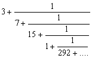
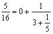
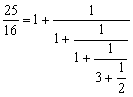

連續分式
程式可以計算連續分式。
程式編寫日期: 2006年11月18日
程式(14步)
| 1 | Kout 1 | 2. | - | 3. | . | 4. | 5 | 5. | = |
| 6. | FIX 0 | 7. | RND | 8. | NORM | 9. | Kin - 1 | 10. | HLT |
| 11. | Kout 1 | 12. | 1/x | 13. | Kin 1 | 14. | RTN | 15. |
LRN 模式輸入程式(只供 fx-3600PV及fx-3800P使用，程式長度: 14步 )
注意: 在輸入程式前請先按 1.1 Kin 1 確保程式能正確輸入。
| Kout 1 | - | . | 5 | = |
| FIX 0 | RND | NORM | Kin - 1 | HLT |
| Kout 1 | 1/x | Kin 1 | RTN | MODE . |
註: 連續分式的形式如下:
例題: 以連續分式表示 π 值。
按 π Kin 1
再按 P1 (顯示3) RUN (顯示7) RUN (顯示15) RUN (顯示1) RUN (顯示292)........
所以答案為

例題2: 以連續分式表示 5/16 值。
按 5 ÷ 16 = Kin 1
再按 P1 (顯示0) RUN (顯示3) RUN (顯示5) RUN (顯示-E-表示計算完結)
所以答案為

例題3: 以連續分式表示 25/16 值。
按 25 ÷ 16 = Kin 1
再按 P1 (顯示1) RUN (顯示1) RUN (顯示1) RUN (顯示3)
RUN (顯示2) RUN (顯示-E-表示計算完結)
所以答案為

例題4: 試計算以下算式的連續分式

按 1 + 2 √ = ÷ 2 = Kin 1
再按 P1 (顯示1) RUN (顯示4) RUN (顯示1) RUN (顯示4) ....
所以答案為

注意: 輸入的數必須為正數，否則計算將會錯誤。輸入有理數請以分數形式輸入，否則計算可能存在誤差。
註: 這個程亦可以計算無理數的連續分式，不過由於計數機的準確度有限，誤差會隨計算的項數而增加，因此較後的項(對整個的值影響很少的項)有可能出現錯誤。